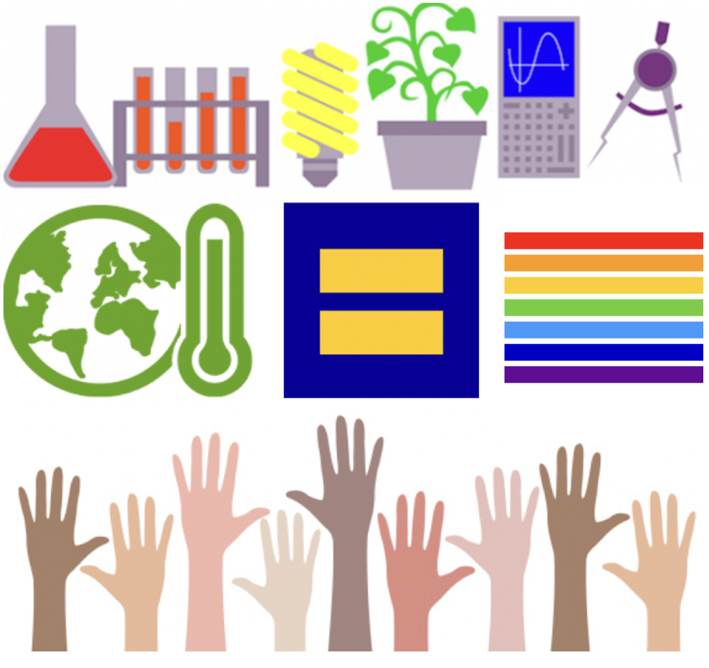

Our values that we seek to promote in and by means of our research work are best described by the famous phrase of Malcom Forbes, an American enterpreneur and publisher, that “diversity is the art of thinking independently together“. At the SEARCH group, we are inspired by this art of individualism, intellectual meritocracy, social cohesion and team work to advance energy sciences.
Yury Dvorkin
ydvorki1@jhu.edu
Ralph O'Connor Sustainable Energy Institute
Department of Civil and Systems Engineering
Department Electrical and Computer Engineering
Johns Hopkins University
Baltimore, MD